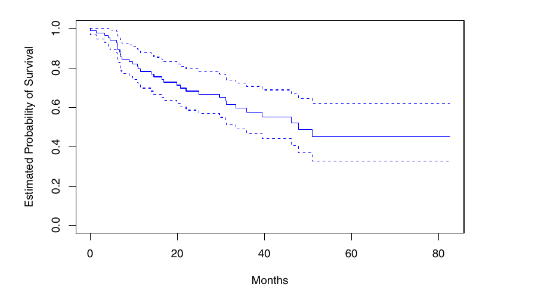

| id | time | status | covariates |
|---|---|---|---|
| 101 | 13 | censored | X101 |
| 102 | 2 | employed | X102 |
| 103 | 9 | discouraged | X103 |
| 104 | 6 | olf | X104 |
In survival analysis, we study the data where the outcome variable is the time until an event occurs.
Eg: death of a cancer patient, re-employment of an unemployed worker, machine becoming unserviceable, etc.
Survival analysis is powerful because it provides methods to deal with incomplete observation of time
The time taken for for the event of interest to occur is called the survival time. The event occurring is referred to as failure.
Hereafter, we will assume that failure can only occur once; unless specified.
Survival time by the random variable \(T \geq 0\).
Incomplete observation of time can happen due to two reasons: i) censoring or ii) truncation.
A censored observation is incomplete due to random factors.
A truncated observation is incomplete due to a selection process inherent in the study design.
Data can be i) right censored ii) left censored or iii) mid (interval) censored
The most common one is right censoring. It happens due to i) attrition or ii) the study ending before failure.
Left censoring happens when the subject is observed after failure has occurred.
\[ \delta = \begin{cases} 1 & \text{if failure} \\ 0 & \text{if censored} \\ \end{cases} \]
Truncation are of two kinds: i) left truncation and ii) right truncation.
Left truncation, also know as delayed entry, occurs when the subject enters the study after the time at which they were exposed to the possibility of failure.
Eg: Analysing survival time of individuals who had a cardiac arrest, but including them in the study only after they are discharged from the hospital post the arrest. We will miss out on the patients who died during hospitalization.
Right truncation happens only the subjects who face failure within the period of analysis are included. This method of sampling is known as length biased sampling
Eg: Analysing data from a death registry. Here, we only have individuals who died within the specified time.
Truncation leads to selection bias in the study.
\[S(t) = \mathbb{P}(T > t)\]
Gives the probability that a person survives longer than some specified time \(t\).
\(S(0) = 1\) and \(S(\infty) = 0\).
\[h(t) = \lim_{\Delta t \to 0 } \frac{\mathbb{P}(t < T \leq t + \Delta T | T \geq t)}{\Delta t}\]
Gives the instantaneous potential per unit time for the event to occur, given that the individual has survived up to time t.
Also known as the conditional failure rate
\(h(t) \geq 0\). Has no upper bound.
\[H(t) = \int_{0}^{t} h(u) \mathrm{d}u\]
\[ \begin{align} S(t) &= \exp{\left(- \int_{0}^{t} h(u) du\right)}\\ &= \exp(- H(t)) \end{align} \]
\[ \begin{align} h(t) &= - \left[\frac{\frac{d S(t)}{dt}}{S(t)} \right]\\ &= \frac{f(t)}{S(t)} \end{align} \] where \(f(t)\) is the probability density function of survival time.
\[ \begin{aligned} && S(t) &= \mathbb{P}(T > t)\\ & \Rightarrow & \frac{dS(t)}{dt} &= \lim_{\Delta t \to 0 } \frac{\mathbb{P}(T > t + \Delta t) - \mathbb{P}(T > t)}{\Delta t}\\ & \Rightarrow & -\frac{dS(t)}{dt} &= \lim_{\Delta t \to 0 } \frac{\mathbb{P}(T > t) - \mathbb{P}(T > t + \Delta t)}{\Delta t}\\ &&& = \lim_{\Delta t \to 0 } \frac{\mathbb{P}(t < T \leq t + \Delta t)}{\Delta t}\\ &&& = \lim_{\Delta t \to 0 } \frac{\mathbb{P}(t < T \leq t + \Delta t, T > t)}{\Delta t}\\ & \Rightarrow & - \left[\frac{\frac{d S(t)}{dt}}{S(t)} \right] &= \lim_{\Delta t \to 0 } \frac{1}{\Delta t} \frac{\mathbb{P}(t < T \leq t + \Delta t, T > t)}{\mathbb{P}(T > t)}\\ &&& = \lim_{\Delta t \to 0 } \frac{\mathbb{P}(t < T \leq t + \Delta t | T > t)}{\Delta t} \\ & \Rightarrow & - \left[\frac{\frac{d S(t)}{dt}}{S(t)} \right] &= h(t) \end{aligned} \]
Moreover, \[ \begin{aligned} f(t) &= \lim_{\Delta t \to 0 } \frac{\mathbb{P}(T > t) - \mathbb{P}(T > t + \Delta t)}{\Delta t}\\ &= -\frac{dS(t)}{dt} \end{aligned} \]
Hence, \[ h(t) = \frac{f(t)}{S(t)} \]
\[ \begin{aligned} && \frac{\mathrm{d}}{\mathrm{d}t}\ln{S(t)} &= \frac{1}{S(t)} \frac{\mathrm{d}}{\mathrm{d}t}S(t) \\ & \Rightarrow & -\frac{\mathrm{d}}{\mathrm{d}t}\ln{S(t)} &= - \frac{1}{S(t)} \frac{\mathrm{d}}{\mathrm{d}t}S(t) \\ &&&= h(t) \end{aligned} \]
Integrate both sides wrt. a dummy variable \(u\), from \(0\) to \(t\).
\[ \begin{aligned} && -\int_{0}^{t} \frac{\mathrm{d}}{\mathrm{d}t}\ln{S(u)} \mathrm{d}u &= \int_{0}^{t} h(u) \mathrm{d}u\\ & \Rightarrow & - [\ln S(t) - \ln S(0)] &= \int_{0}^{t} h(u) \mathrm{d}u\\ & \Rightarrow & - [\ln S(t) - \ln(1)] &= \int_{0}^{t} h(u) \mathrm{d}u\\ & \Rightarrow & \ln S(t) &= - \int_{0}^{t} h(u) \mathrm{d}u\\ & \Rightarrow & S(t) &= \exp \left( -\int_{0}^{t} h(u) \mathrm{d}u \right) \end{aligned} \]
Descriptive statistics about about survival time, such as average survival time, are not helpful as they do not account for censoring.
Non-parametric models help us estimate survival functions without assuming what kind of a distribution the data follows.
\[ \begin{aligned} \widehat{S}(t_k) &= \prod_{j = 1}^{k} \widehat{\mathbb{P}}(T > t_j | T > t_{j-1})\\ &= \prod_{j = 1}^{k} \left(\frac{r_j - q_j}{r_j}\right) \end{aligned} \]
where \(r_j\) is the number of individuals at risk of failure at \(t_j\), and \(q_j\) is the number of individuals who fail at \(t_j\).
Let \(R(t)\) bet the set of subjects which have not been censored/failed till time \(t\), It is called the risk set, as it is the set of subjects at risk of failure at that time.
\(r_t = |R(t)|\)
\[ \widehat{S}(t) = \widehat{\mathbb{P}}(T > t_k) \]
Using the law of total probability, \[ \begin{aligned} \widehat{S}(t_k) &= \widehat{\mathbb{P}}(T > t_k | T > t_{k-1})\widehat{\mathbb{P}}(T > t_{k-1}) \\ & \qquad + \widehat{\mathbb{P}}(T > t_k | T \leq t_{k-1})\widehat{\mathbb{P}}(T \leq t_{k-1}) \\ &= \widehat{\mathbb{P}}(T > t_k | T > t_{k-1})\widehat{\mathbb{P}}(T > t_{k-1}) + 0\\ &= \widehat{\mathbb{P}}(T > t_k | T > t_{k-1})\widehat{S}(t_{k-1}) \end{aligned} \]
The recursive expression above can be expanded into: \[ \begin{aligned} \widehat{S}(t_k) &= \widehat{\mathbb{P}}(T > t_k | T > t_{k-1})\widehat{\mathbb{P}}(T > t_{k-1} | T > t_{k-2}) \ldots \widehat{\mathbb{P}}(T > t_1 | T > 0) \widehat{S}(0) \\ \end{aligned} \]
We know that \(S(0) = 1\)
Hence the above expression can be written as an indexed product. \[ \begin{aligned} \widehat{S}(t_k) &= \prod_{j = 1}^{k} \widehat{\mathbb{P}}(T > t_j | T > t_{j-1})\\ &= \prod_{j = 1}^{k} \frac{\widehat{\mathbb{P}}(T > t_j, T > t_{j - 1})}{\widehat{\mathbb{P}}(T > t_{j-1})}\\ &= \prod_{j = 1}^{k} \frac{\widehat{\mathbb{P}}(T > t_j)}{\widehat{\mathbb{P}}(T > t_{j-1})}\\ &= \prod_{j = 1}^{k} \left(\frac{r_j - q_j}{r_j}\right) \end{aligned} \]
Used in deriving the variance of KM Estimator
Let \(X\) be a random variable and \(f(X)\) be a smooth (i.e. infinitely differentiable) function.
Taking the first two terms of the Taylor series expansion of \(f(X)\) around \(\mu_X\), \[ \begin{align} && f(X) &\cong f(\mu_X) + (X - \mu_X) f'(\mu_X)\\ & \Rightarrow & \text{Var}[f(x)] &\cong \text{Var} [f(\mu_X) + (X - \mu_X) f'(\mu_X)]\\ &&& = \text{Var} [(X - \mu_X) f'(\mu_X)] \\ &&& = [f'(\mu_X)]^2 \text{Var}[X - \mu_X]\\ &&& = [f'(\mu_X)]^2 \text{Var}[X]\\ &&& = \sigma_X^2[f'(\mu_X)]^2\\ \end{align} \]
Take \(f(X) = \ln(X)\) \[ \text{Var}[\ln(X)] \cong \sigma_X^2 \frac{1}{\mu_X^2} \]
Take \(f(X) = \exp(X)\) \[ \text{Var}[\exp(X)] \cong \sigma_X^2 [\exp(\mu_X)]^2 \]
Take \(ln\) of the KM Estimator \[ \begin{aligned} && \widehat{S}(t) &= \prod_{j = 1}^{t} \left(\frac{r_j - q_j}{r_j}\right)\\ & \Rightarrow & \ln(S(t)) &= \sum_{j = 1}^t \left(\frac{r_j - q_j}{r_j}\right)\\ \end{aligned} \]
Let \(\widehat{p}_j = \frac{r_j - q_j}{r_j}\) \[ \ln(S(t)) = \sum_{j = 1}^t p_t \]
Consider observations in the risk set at time \(j\) to independent Bernoulli observations with constant probability \(p_j\). Hence, \[ \mu_X = \widehat{p}_j\\ \sigma^2_X = \frac{\widehat{p}_j (1 - \widehat{p}_j)}{r_j} \]
From the pervious slide, \[ \begin{aligned} \widehat{\text{Var}}[\ln(\widehat{p})] &\cong \frac{1}{\mu_X^2} \sigma_X^2\\ &= \frac{1}{\widehat{p}_j^2} \frac{\widehat{p}_j (1 - \widehat{p}_j)}{r_j}\\ &= \frac{q_j}{r_j(r_j - d_j)} \end{aligned} \]
Assume that observations at each time are independent. Hence, \[ \begin{align} \widehat{\text{Var}}[\ln(\widehat{S}(t))] &= \sum_{j = 1}^t \widehat{\text{Var}}[\ln(\widehat{p_i})]\\ &= \sum_{j = 1}^t \frac{q_j}{r_j(r_j - d_j)} \end{align} \]
Let \(Y = \ln[\widehat{S}(t)]\). \(\sigma_Y^2\) is given by the estimator above. Approximate \(\mu_Y\) by \(\ln[\widehat{S}(t)]\). From the previous slide, \[ \begin{align} \text{Var}[\exp(Y)] &\cong[\exp(\mu_Y)]^2 \sigma_Y^2 \\ &\cong \exp(\ln[\widehat{S}(t)]) \left[\sum_{j = 1}^t \frac{q_j}{r_j(r_j - d_j)}\right]\\ &= [\widehat{S}(t)]^2 \left[\sum_{j = 1}^t \frac{q_j}{r_j(r_j - d_j)}\right] \end{align} \]
We can use this below, \[ \begin{align} && \widehat{S}(t) &= \exp\{\ln[\widehat{S}(t)]\}\\ &&& = \exp(Y)\\ & \Rightarrow & \widehat{\text{Var}}[\widehat{S}(t)] &= \widehat{\text{Var}}[\exp(Y)]\\ &&& = [\widehat{S}(t)]^2 \left[\sum_{j = 1}^t \frac{q_j}{r_j(r_j - d_j)}\right] \end{align} \]

Illustration of KM Curve (James et. al., 2021, p. 466)
If we intend to obtain the survivor or hazard function while controlling for a set of covariates, we use the Cox PH Model,
It is a semi-parametric model, which assumes the hazard function to take a following form: \[ h(t|\mathbf{X_i}) = h_0(t) \exp (\boldsymbol{\beta}^\mathsf{T} \mathbf{X_i}) \] where \(h_0 \geq 0\) is an unspecified baseling hazard function, and \(\mathbf{X_i}\) is vector of time-independent covariates for observation \(i\).
The PH Assumption: The model makes some assumptions about the functional form for the hazard function.
Unspecified Baseline: However, the baseline function (\(h_0\)) is unspecified.
These makes the model flexible. If the data does have an underlying parametric distribution, the Cox PH model will approximate it.
However, these also affect when we can apply the model, and how we interpret it.
Take two vectors of covariates \(\mathbf{X_i}\) and \(\mathbf{X_j}\).
The Hazard Ratio is given by: \[ \begin{align} \widehat{HR} &= \frac{\widehat{h}(t, \mathbf{X_i})}{\widehat{h}(t, \mathbf{X_j})}\\ &= \frac{h_0(t) \exp (\boldsymbol{\beta}^\mathsf{T} \mathbf{X_i})}{h_0(t) \exp (\boldsymbol{\beta}^\mathsf{T} \mathbf{X_j})} \\ &= \exp (\boldsymbol{\beta}^\mathsf{T} (\mathbf{X_i} - \mathbf{X_j})) \end{align} \]
A result of the PH assumption is that the HR stays constant over time.
\[ \widehat{S}(t) = S_0(t)^{\exp(\boldsymbol{\beta}^\mathsf{T} \mathbf{X})} \] where \(S_0(t) = \exp(-H_0(t))\) is the baseline survival function
\[ \begin{align} \widehat{S}(t) &= \exp\left(- \int_{0}^{t} h(u, \mathbf{X}) \mathrm{d}u\right)\\ &= \exp\left(- \int_{0}^{t} h_0(u)\exp(\boldsymbol{\beta}^\mathsf{T} \mathbf{X}) \mathrm{d}u \right)\\ &= \exp\left(-\exp(\boldsymbol{\beta}^\mathsf{T} \mathbf{X}) \int_{0}^{t} h_0(u) \mathrm{d}u \right)\\ &= \exp\left(-\exp(\boldsymbol{\beta}^\mathsf{T} \mathbf{X}) H_0(t) \right)\\ &= \exp(-H_0(t) \times \exp(\boldsymbol{\beta}^\mathsf{T} \mathbf{X}))\\ &= \exp(-H_0(t))^{\exp(\boldsymbol{\beta}^\mathsf{T} \mathbf{X})}\\ &= S_0(t)^{\exp(\boldsymbol{\beta}^\mathsf{T} \mathbf{X})} \end{align} \]
Given we are leaving \(h_0\) unspecified, we maximize only the partial likelihood of Cox PH.
For simplicity, assume there are no ties in in time of failure.
Take an uncensored observation \(i\) with failure time \(t_i\).
The hazard function for the \(i^\text{th}\) observation at time \(t_i\) is \(h(t_i|\mathbf{X}_i) = h_0(t_i) \exp (\boldsymbol{\beta} \mathbf{X}_i)\).
The total hazard for at time \(t_i\) for the at risk population is \(\sum_{i^\prime: t_{i^\prime} \geq t_i} h_0(t_i) \exp(\boldsymbol{\beta}^\mathsf{T} \mathbf{X}_{i^\prime})\)
Thus, the probability that observation \(i\) is the one to fail at observation \(t_i\) is \(\frac{h_0(t_i) \exp(\boldsymbol{\beta}^\mathsf{T} \mathbf{X}_i)}{h_0(t_i) \sum_{i^\prime: T_{i^\prime} \geq t_i} \exp(\boldsymbol{\beta}^\mathsf{T}\mathbf{X}_{i^\prime})} = \frac{\exp(\boldsymbol{\beta}^\mathsf{T}\mathbf{X}_i)}{\sum_{i^\prime: T_{i^\prime} \geq t_i} \exp(\boldsymbol{\beta}^\mathsf{T}\mathbf{X}_{i^\prime})}\)
We get the partial likelihood by taking a product of these probabilities over all uncensored observations. \[ l_p(\boldsymbol{\beta}) = \prod_{i:\delta_i = 1} \frac{\exp(\boldsymbol{\beta}^\mathsf{T}\mathbf{X}_i)}{\sum_{i^\prime: T_{i^\prime} \geq t_i} \exp(\boldsymbol{\beta}^\mathsf{T}\mathbf{X}_{i^\prime})} \]
Assume we have \(r\) distinct failure times with \(d_l\) failures at the \(l^\text{th}\) distinct time. \(t^*_{11} = t^*_{12} = \cdots = t^*_{1d_1} < t^*_{21} = t^*_{22} = \cdots = t^*_{2d_2} < \cdots \\ \hspace{18em} < t^*_{r1} = t^*_{r2} = \cdots = t^*_{rd_r}\)
Let \(\mathbf{X}^*_{lj}\) be the vector of covariates for the observation that fails at time \(t^*_{lj}\). Let \(\mathbf{X}^*_{l} = \sum_{j=1}^{d_l}{\mathbf{X}^*_{lj}}\).
Suppose we knew \(t^*_{l1} < t^*_{l2} < \dots < t^*_{ld_l}\). Let \(B(t_{lj})\) be the set of individuals failing at \(t^*_{l1}, t^*_{l2}, \dots, t^*_{ld_l}\)
In this case the Cox Likelihood would be: \[ \begin{align} l_p(\boldsymbol{\beta}) &= \prod_{l=1}^r\prod_{j=1}^{d_l}\frac{\exp(\boldsymbol{\beta}^\mathsf{T}\mathbf{X}^*_{lj})}{\sum_{i:i \in R(t^*_{l1}) \setminus B(t^*_{l(j-1))})} \exp(\boldsymbol{\beta}^\mathsf{T}\mathbf{X}_i)} \\&= \prod_{l=1}^r\frac{\prod_{j=1}^{d_l}{\exp(\boldsymbol{\beta}^\mathsf{T}\mathbf{X}^*_{lj})}}{\prod_{j=1}^{d_l} \left[ \sum_{i:i \in R(t^*_{l1}) \setminus B(t^*_{l(j-1)})} \exp(\boldsymbol{\beta}^\mathsf{T}\mathbf{X}_i)\right]} \\&= \prod_{l=1}^r{\frac{\exp(\boldsymbol{\beta}^\mathsf{T}\mathbf{X}^*_l)}{\prod_{j=1}^{d_l} \left[ \sum_{i: i \in R(t^*_{l1})} \exp(\boldsymbol{\beta}^\mathsf{T}\mathbf{X}^*_i) - \sum_{i: i \in B(t^*_{l(j-1)})} \exp(\boldsymbol{\beta}^\mathsf{T}\mathbf{X}_i) \right]} } \end{align} \]
However, we don’t know \(t^*_{l1} < t^*_{l2} < \dots < t^*_{ld_l}\) due to ties. Hence, we cannot estimate \(\sum_{i:i \in B(t^*_{l(j-1)})} \exp(\boldsymbol{\beta}^\mathsf{T}\mathbf{X}^*_i)\).
We shall consider two ways of approximating the likelihood.
However, hazard ratios can be only obtained between two individuals in the same strata.
Breslow Correction: Ignore the sum. Hence, the Cox likelihood becomes: \[ \begin{align} l_p(\boldsymbol{\beta}) &= \prod_{l=1}^r \frac{\exp(\boldsymbol{\beta}^\mathsf{T}\mathbf{X}^*_l)}{ \left[ \sum_{i: i \in R(t^*_{l1})} \exp(\boldsymbol{\beta}^\mathsf{T}\mathbf{X}_i) \right]^{d_l}} \end{align} \]
Efron Correction: Replace the sum by \(j-1\) times the average. \[ \sum_{i: i \in B(t^*_{l(j-1)})} \exp(\boldsymbol{\beta}^\mathsf{T}\mathbf{X}_i) \approx (j -1) \frac{1}{d_l} \sum_{k=1}^{d_l} \exp(\boldsymbol{\beta}^\mathsf{T}\mathbf{X}^*_{lk}) \] Hence, the Cox likelihood becomes: \[ \begin{align} l_p(\boldsymbol{\beta}) = \prod_{l=1}^r{\frac{\exp(\boldsymbol{\beta}^\mathsf{T}\mathbf{X}^*_l)}{\prod_{j=1}^{d_l} \left[ \sum_{i: i \in R(t^*_{l1})} \exp(\boldsymbol{\beta}^\mathsf{T}\mathbf{X}^*_{l^\prime j}) - (j -1) \frac{1}{d_l} \sum_{k=1}^{d_l} \exp(\boldsymbol{\beta}^\mathsf{T}\mathbf{X}^*_{lk}) \right]} } \end{align} \]
The Berslow Estimator is computationally simpler but more biased to underestimation compared to the Effron Correction.
\[ h_s(t|\mathbf{X_i}) = h_{s0}(t) \exp (\boldsymbol{\beta}^\mathsf{T} \mathbf{X_i}) \] where the subscript \(s\) represents different strata
When there covariates that vary with time, we can take the covariates as a function of time. \[ h(t|\mathbf{X_i(t)}) = h_{s}(t) \exp (\boldsymbol{\beta}^\mathsf{T} \mathbf{X_i(t)}) \]
We can also model the change in effects of fixed covariates with time. \[ h(t|\mathbf{X_i}) = h_{s}(t) \exp (\boldsymbol{\beta(t)}^\mathsf{T} \mathbf{X_i}) \] This can be estimated using a linear additive model.
Competing Risk Models allow for there to be risks of different kinds.
Let \(\delta = c\) whre \(c=0\) denotes censoring and \(c = 1, \dots, C\) different kinds of failures.
We will assume each failure type as mutually exclusive. Under this framework, if we want allow for the possibility of multiple failures, we consider each combination as a usique failure type.
We will also assume no recurrence.
Cause specific hazard function sum up to the cumuative hazrd at a point of time. \[ h(t) = \sum_{c=1}^C h_c(t) \]
Cause specific cumulative hazard \[ H_c(t) = \int_{0}^{t} h_c(t) \mathrm{d}u \]
Overall hazard \[ H(t) = \sum_{j=1}^k H_c(t) \]
Survival Function \[ S(t) = e^{-H(t)} \]
The CIF provides the marginal probability of failure occuring in the presence of competing failures.
The CIF is given by \[ \begin{align} F_c(t) &= \mathbb{P}(T \leq t, \delta = c)\\ &= \int_{0}^{t} h_c(u)S(u) \mathrm{d}u \end{align} \]
From this, we can obtain the total distribution function \[ F(t) = \sum_{c=1}^CF_c(t) \]
It can also be defined as \[ F(t) = 1 - S(t) \]
For ordered failure times \(t_j\), we estimate the hazard for failure type \(c\) as \[ \hat{h}(t_j, c) = \frac{q_{cj}}{r_j} \] where \(q_cj\) is the number of failured of type \(c\) at \(t_j\), and \(r_j\) is the population at risk in the time.
From this, the CIF can be estimated as \[ F(t_j, c) = \sum_{j \prime = 1}^j\hat{h}_c(t_{j\prime})\hat{S}(T_{j\prime-1}) \]
We can estimate competing riks with covariates with subdistribution hazards, using the method provided in Fine & Grey (1988).
The risk set for individual \(i\) facing failure type \(c\) is defined as \[ R_i = {j: (T_j \geq T_i) \cup (T_j \leq T_i \cap \delta_i \neq c)} \]
The subdistribution hazard function for the same is defined as \[ h_c(t) = \lim_{\Delta t \to 0} \frac{\mathbb{P}\left(t < T_c \leq t + \Delta t\mid T_i > t \cup (T_{c^\prime} \leq t \cap c^\prime \neq c)\right) }{ \Delta t } \]
Similar to a Cox PH model, we can obtain subdistribution hazard ratios (SHR) from the Fine-Grey Model
These can also be used to estimate the CIF. The mathematical details of the same have not been covered here.
In the previous methods, we estimate a separate models for each risk.
The Lunn-McNeil method allows to use a single model.
It requires duplication of data and modifed version of the stratified Cox PH model.
| id | time | status | covariates |
|---|---|---|---|
| 101 | 13 | censored | X101 |
| 102 | 2 | employed | X102 |
| 103 | 9 | discouraged | X103 |
| 104 | 6 | olf | X104 |
| id | time | status | employed | discouraged | olf | covariates |
|---|---|---|---|---|---|---|
| 101 | 13 | 0 | 1 | 0 | 0 | X101 |
| 101 | 13 | 0 | 0 | 1 | 0 | X101 |
| 101 | 13 | 0 | 0 | 0 | 1 | X101 |
| 102 | 2 | 1 | 1 | 0 | 0 | X102 |
| 102 | 2 | 0 | 0 | 1 | 0 | X102 |
| 102 | 2 | 0 | 0 | 0 | 1 | X102 |
| 103 | 9 | 0 | 1 | 0 | 0 | X103 |
| 103 | 9 | 1 | 0 | 1 | 0 | X103 |
| 103 | 9 | 0 | 0 | 0 | 1 | X103 |
| 104 | 6 | 0 | 1 | 0 | 0 | X104 |
| 104 | 6 | 0 | 0 | 1 | 0 | X104 |
| 104 | 6 | 1 | 0 | 0 | 1 | X104 |
| id | time | status | D1 | D2 | D3 | covariates |
|---|---|---|---|---|---|---|
| 101 | 13 | 0 | 1 | 0 | 0 | X101 |
| 101 | 13 | 0 | 0 | 1 | 0 | X101 |
| 101 | 13 | 0 | 0 | 0 | 1 | X101 |
| 102 | 2 | 1 | 1 | 0 | 0 | X102 |
| 102 | 2 | 0 | 0 | 1 | 0 | X102 |
| 102 | 2 | 0 | 0 | 0 | 1 | X102 |
| 103 | 9 | 0 | 1 | 0 | 0 | X103 |
| 103 | 9 | 1 | 0 | 1 | 0 | X103 |
| 103 | 9 | 0 | 0 | 0 | 1 | X103 |
| 104 | 6 | 0 | 1 | 0 | 0 | X104 |
| 104 | 6 | 0 | 0 | 1 | 0 | X104 |
| 104 | 6 | 1 | 0 | 0 | 1 | X104 |
\[ \begin{align} h_c(t|\mathbf{X}) &= h_{c0}(t) \exp (\beta_1 X_1 + \beta_2X_2 + \dots + \beta_pX_p + \\ &\delta_{21}D_2X_1 + \delta_{22}D_2X_2 + \dots + \delta_{2p}D_2X_p + \\ & \qquad \qquad \qquad \qquad \qquad \ \vdots \\ &\delta_{C1}D_CX_1 + \delta_{C2}D_CX_2 + \dots + \delta_{Cp}D_CX_p) \end{align} \] where \(c = 1, \dots, C\) denotes the type of failure. \(D_2, \dots, D_C\) are dummies representing each failure type except the baseline one.
The linear function for observation with failure type \(c=1\) reduces to \(\beta_1X_1 + \dots + \beta_pX_p\)
The linear function for observation with failure type \(c\neq1\) reduces to \((\beta_1 + \delta_{1c})X_1 + \dots + (\beta_p + \delta_{pc})X_p\)
This a parametric distribution
The hazard function takes the following form: \(h(t, \mathbf{X}) = \lambda(t, \mathbf{X}) p t^{p-1}\)
where \(\lambda(t, \mathbf{X}) = \exp(\beta_0 + \boldsymbol{\beta}^\mathsf{T}\mathbf{X}) > 0\) and \(p>0\)
Here, \(\lambda\) is called the scale parameter and \(p\) is called the shape parameter.
\(p>1 \implies\) hazard increases over time.
\(p=1 \implies\) constant hazard (equivalent to an exponential model where \(h(t) = \lambda(t)\)).
\(p<1 \implies\) hazard decreases over time.
Take two different observation \(i\) and \(j\) with covariates \(\mathbf{X}_i\) and \(\mathbf{X}_j\) respectively.
The hazard ratio is given by: \[\begin{align} \widehat{HR} &= \frac{\widehat{h}(t, \mathbf{X_i})}{\widehat{h}(t, \mathbf{X_j})}\\ &= \frac{\exp (\beta_0 + \boldsymbol{\beta}^\mathsf{T}\mathbf{X_i}) p t^{p-1}} {\exp (\beta_0 + \boldsymbol{\beta}^\mathsf{T}\mathbf{X_j}) p t^{p-1}} \\ &= \exp (\boldsymbol{\beta}^\mathsf{T}(\mathbf{X_i} - \mathbf{X_j})) \end{align}\]
Take \(T_1\) and \(T_2\) to be the survival times associated with two groups, the AFT assumption says that \(T_1 = \gamma T_2\) and \(S(t_1) = S(\gamma t_2), \forall t\)
Just like the underlying assumption in PH models is that the effect of covariates is multiplicative with respect to the hazard, the underlying assumption in the AFT Models is that the effect of covariates is multiplicative with respect to survival time.
The \(\lambda\) here is known as the Acceleration Factor.
We can estimate the Weibull survivor function from the hazard function: \[\begin{align} && h(t, \mathbf{X}) &= \lambda(t, \mathbf{X}) p t^{p-1}\\ & \Rightarrow & S(t, \mathbf{X}) &= \exp(-\lambda(t, \mathbf{X}) t^p) \end{align}\]
Take \(t\) to the LHS: \[\begin{align} t &= [- \ln S(t, \mathbf{X})]^{\frac{1}{p}} \times \frac{1}{\lambda(t, \mathbf{X}) ^ {\frac{1}{p}}} \end{align}\]
Reparametrize \(\frac{1}{\lambda(t, \mathbf{X}) ^ \frac{1}{p}} = \exp(\alpha_0 + \boldsymbol{\alpha}^\mathsf{T}\mathbf{X})\)
Now, \(t = [- \ln (S(t, \mathbf{X}))]^{\frac{1}{p}} \times \exp(\alpha_0 + \boldsymbol{\alpha}^\mathsf{T}\mathbf{X})\)
Let \(S(t, \mathbf{X_j}) = q\)
By AFT, \(S(\lambda t, \mathbf{X_i}) = q\)
Using the above definition of t, \[\begin{align} && \lambda &= \frac{\lambda t}{t}\\ &&&= \frac{[- \ln (S(\lambda t, \mathbf{X_i}))]^{\frac{1}{p}} \times \exp(\alpha_0 + \boldsymbol{\alpha}^\mathsf{T}\mathbf{X_j})} {[- \ln (S(\lambda t, \mathbf{X_j}))]^{\frac{1}{p}} \times \exp(\alpha_0 + \boldsymbol{\alpha}^\mathsf{T}\mathbf{X_i})}\\ &&&= \frac{[- \ln (q)]^{\frac{1}{p}} \times \exp(\alpha_0 + \boldsymbol{\alpha}^\mathsf{T}\mathbf{X_i})} {[- \ln (q)]^{\frac{1}{p}} \times \exp(\alpha_0 + \boldsymbol{\alpha}^\mathsf{T}\mathbf{X_j})}\\ & \Rightarrow & \lambda &= \exp(\boldsymbol{\alpha}^\mathsf{T}(\mathbf{X_i} - \mathbf{X_j})) \end{align}\]
In a Weibull model, if \(p\) is fixed, AFT \(\iff\) PH.
We can also derive a relationship between the coefficients.
Under AFT, \[\begin{align} && \frac{1}{\lambda ^ \frac{1}{p}} &= \exp(\alpha_0 + \boldsymbol{\alpha}^\mathsf{T}\mathbf{X}) \\ &\Rightarrow& (1-p)\ln(\lambda) &= - (\alpha_0 + \boldsymbol{\alpha}^\mathsf{T}\mathbf{X}) \\ &\Rightarrow& \ln(\lambda) &= -p (\alpha_0 + \boldsymbol{\alpha}^\mathsf{T}\mathbf{X}) \end{align}\]
Under PH \[\begin{align} && \lambda &= \exp (\beta_0 + \boldsymbol{\beta}^\mathsf{T}\mathbf{X})\\ & \Rightarrow & \ln(\lambda) &= \beta_0 + \boldsymbol{\beta}^\mathsf{T}\mathbf{X} \end{align}\]
Hence, \(\beta_0 = - \alpha_0\) and \(\beta = - \alpha\)
Breslow vs Efron tie handling in Cox proportional hazards. (2026). MetricGate. https://metricgate.com/blogs/breslow-vs-efron-tie-handling-cox/
Fine, J. P., & Gray, R. J. (1999). A Proportional Hazards Model for the Subdistribution of a Competing Risk. Journal of the American Statistical Association, 94(446), 496–509. https://doi.org/10.2307/2670170
Hosmer, D. W., Lemeshow, S., & May, S. (2011). Applied survival analysis: Regression modeling of time to event data (2nd ed). John Wiley & Sons.
James, G., Witten, D., Hastie, T., & Tibshirani, R. (2021). An introduction to statistical learning: With applications in R (2nd ed). Springer. https://www.statlearning.com/
Kleinbaum, D. G., & Klein, M. (2005). Survival analysis: A self-learning text (2nd ed). Springer.
Waagepetersen, R. (2024, Semptember 29). Cox’s proportional hazards model and Cox’s partial likelihood. Aalborg University. https://people.math.aau.dk/~rw/Undervisning/DurationAnalysis/Slides/lektion3.pdf